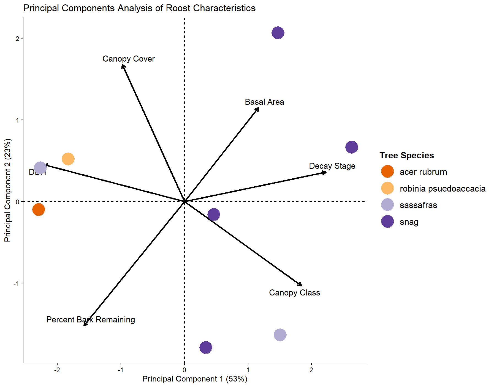
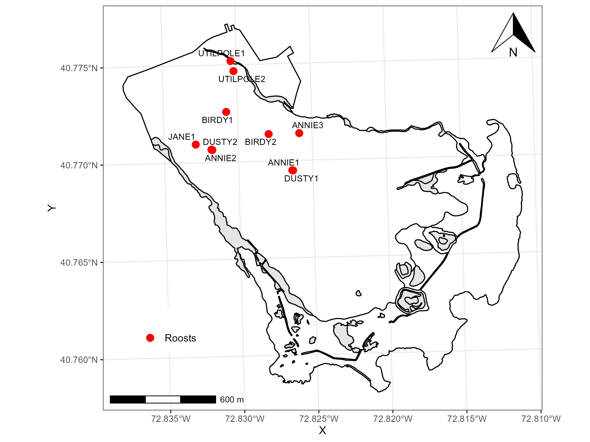

| Summary of Bats Captured in 2025 | ||||
|---|---|---|---|---|
| EPFU | LABO | LANO | MYSE | |
| Sex | ||||
| Female | 32 | 7 | 1 | 4 |
| Male | 20 | 3 | 2 | 0 |
| Reproductive Condition | ||||
| Lactating | 0 | 0 | 0 | 1 |
| Not Reproductive | 20 | 3 | 3 | 0 |
| Pregnant | 25 | 4 | 0 | 3 |
| Unknown | 7 | 3 | 0 | 0 |
| Age Class | ||||
| Adult | 51 | 9 | 3 | 4 |
| Unknown | 1 | 1 | 0 | 0 |
| Total | 52 | 10 | 3 | 4 |
Characterizing day-roost preference and landscape use of the endangered Northern long-eared myotis in Fire Island National Seashore, New York
Introduction
The Northern long-eared myotis (Myotis septentrionalis; MYSE) is a federally endangered bat that has been largely extirpated throughout its Northeastern range due to White-Nose Syndrome (WNS) (Krueger et al. 2024). Fire Island National Seashore (FIIS) hosts the only recently confirmed MYSE colony in New York and is among the few locations in the Northeast where MYSE are still observed. During summer, MYSE form maternity colonies that move among several tree roosts in small family groups, but little is known about their roost preferences. Because post-WNS MYSE detections are rare, land managers lack empirical data on current habitat use so current management plans may no longer reflect the ecological conditions of surviving colonies. This study will monitor the remaining MYSE colonies in FIIS to expand understanding of habitat use and support evidence-based management of one of the last known regional populations.
Methods
Research PIs and GRAs will mist-net, band, and radio-tag Northern long-eared bats using Holohil LB-2X 0.27 g VHF transmitters during the 2024-2026 summer seasons. Radio-tagged MYSE will be tracked daily to roost trees for the duration of the transmitter battery life. Upon the location of roosts, researchers will collect data on tree measurements.
To summarize variation in day-roost characteristics across tree species, we conducted principal components analysis (PCA) on standardized variables (mean-centered and scaled to unit variance). We interpreted loadings for the first two principal components to identify correlated gradients among DBH and Decay Stage. Site scores from the PCA were used as predictors in subsequent regression models. Analyses were performed in R version 4.4.1 using the stats package.
Results
During the 2025 summer season, we identified 10 day-roosts. Two of the roosts were anthropogenic
Across tree species, DBH and decay stage contributed to 76% of the variance in the data.
Wants in line code injected into results. Reference table and figures
Discussion
Our Principal Components Analysis indicated that DBH and decay stage are important components of day-roost tree characteristics.
Tables
Figures


References
Krueger, Sarah K., Sarah C. Williams, Joy M. O’Keefe, Gene A. Zirkle, and Catherine G. Haase. 2024. “White-Nose Syndrome, Winter Duration, and Pre-Hibernation Climate Impact Abundance of Reproductive Female Bats.” PLOS ONE 19 (4): e0298515. https://doi.org/10.1371/journal.pone.0298515.